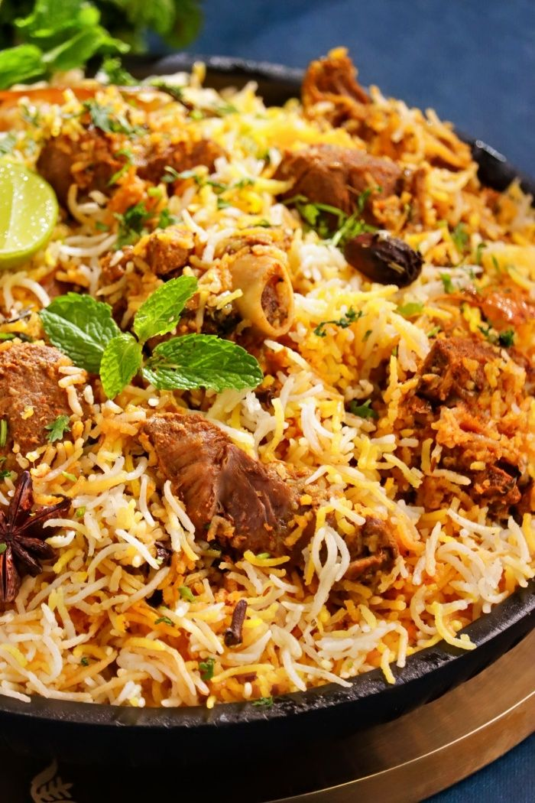
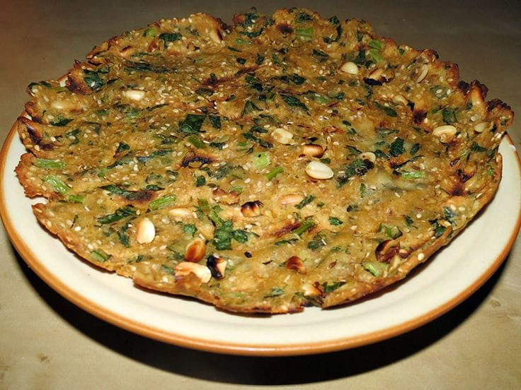
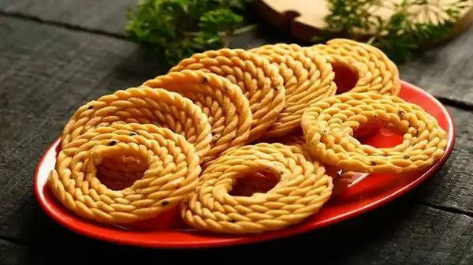

Hyderabadi Biryani
A royal dish made with aromatic basmati rice, tender meat, and rich spices – the pride of Telangana cuisine.

Sarva Pindi
A crispy rice flour pancake with peanuts, curry leaves, and spices – a favorite breakfast snack.

Sakinalu
Crunchy rice flour rings seasoned with sesame – traditionally made during Makar Sankranti.